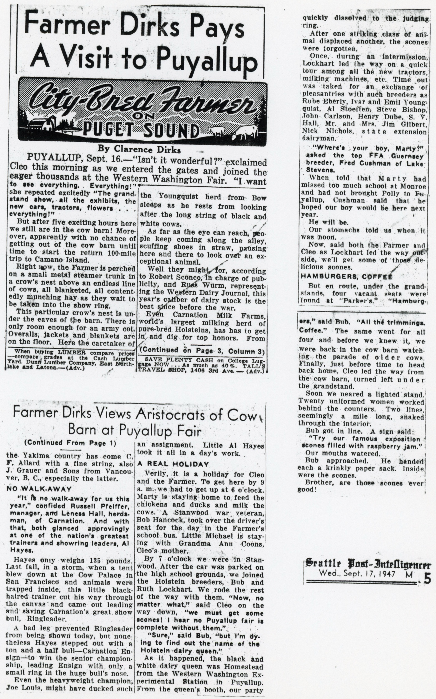
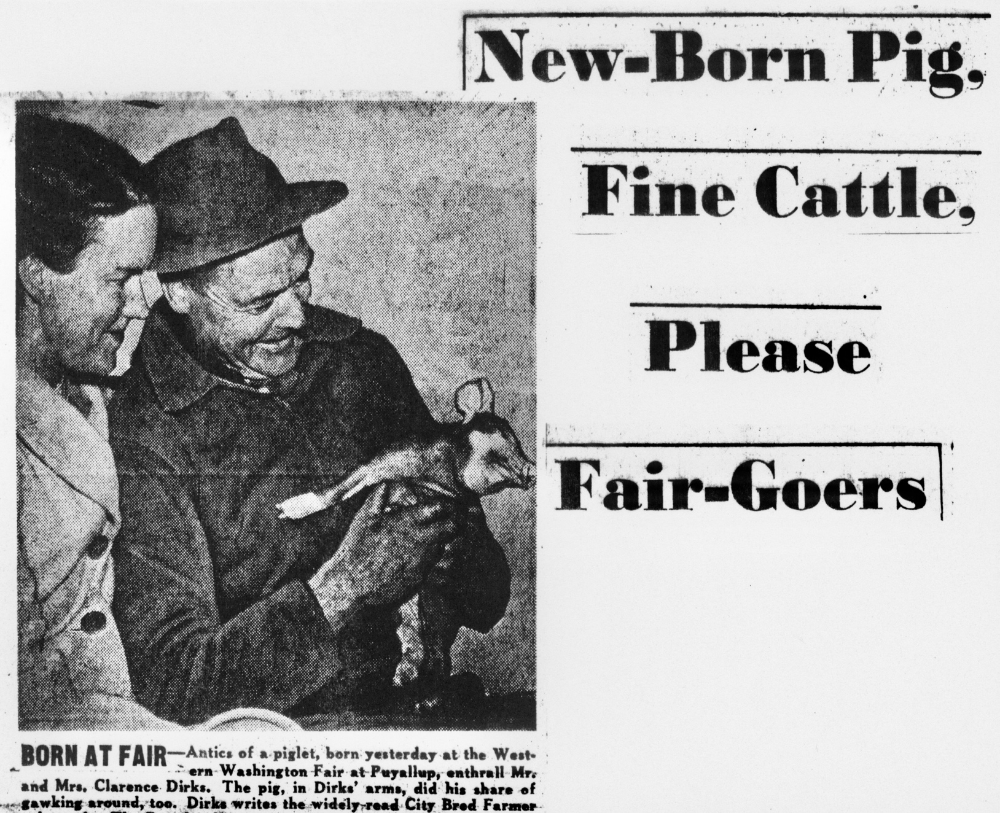
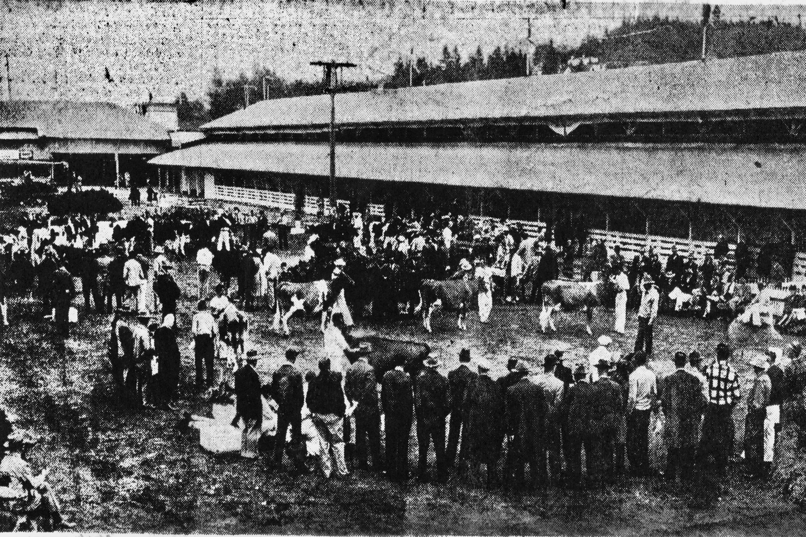

(Post-Intelligencer Photo by John M. (Hack) Miller)

JUDGING RING –Dairy cattle, described by judges as the best shows at the Western Washington Fair at Puyallup since the war, circle the judging ring before appraising eyes of spectators. Quality of stock this year is so high officials of Carnation Milk Farms, one of the biggest entrants, readily admit “stiff competition” from entrants from other herds. (Post-Intelligencer Photo)